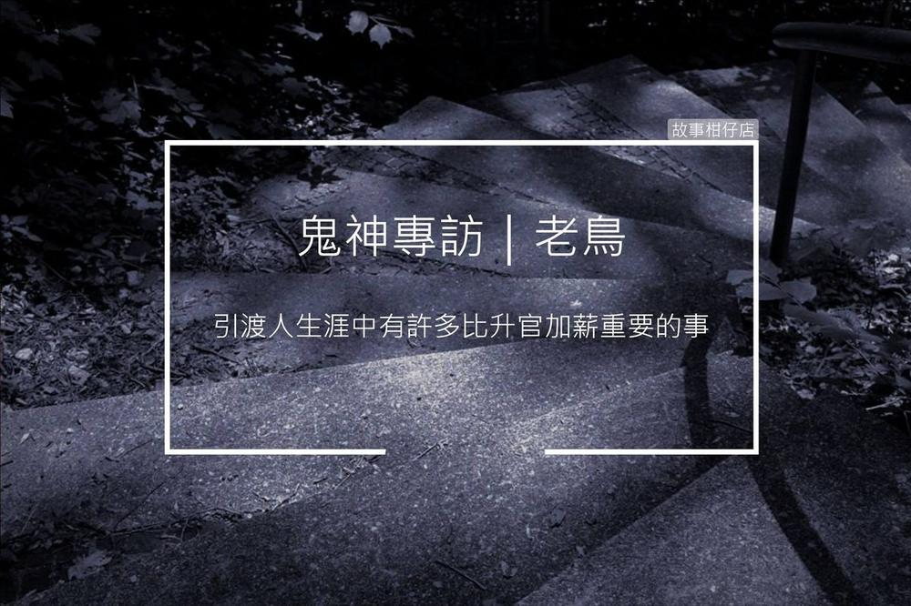

鬼神專訪/老鳥引渡人

資深員工的深情告白──專訪老鳥引渡人
採訪人物：老鳥引渡人
採訪人：剪溜
故事回顧：引渡人
剪溜：祢當初怎麼會來當引渡人？當了多久？
老鳥引渡人：好，是這樣的。當初我過世後，十殿走一遭，那時才發現，原來地府如此公正、磊落，完全不若世人口中的恐怖；十殿閻王諄諄教誨，勸人行善，讓我深受感召，便決定留下來當引渡人，至今已五百七十八年之久。
剪溜：當了這麼久還沒升職的原因是？
老鳥引渡人：好，是這樣的。我個人認為，引渡人生涯中有許多比拼升官加薪還重要的事，所以升職之類的問題，基本上不是我職涯的首要考量，最重要的是充實自己，學習各主管、長官對於生死善惡的判斷；再者，引渡人算是第一線職務，能一直在前線為地府服務，是我莫大榮幸，而且能有一批有良好默契的夥伴，工作起來特別帶勁。
剪溜：引渡人引渡鬼魂的程序是？
老鳥引渡人：好，引渡這件事是這樣。首先，每月管理部都會來函，通知當月有多少亡魂。自然死亡、病死這類，便按照區域發派給各引渡人；至於冤死、枉死、含冤而死成厲鬼的，則交由主管黑白無常處理。
我們接到亡魂名單後，勾魂當天便由搭公務車前往該區域，一組兩個引渡人，負責一個亡魂。下車後，一個引渡人便搖勾魂幡，另一個則手敲勾魂缽，同時口念撫魂經七七四十九次，讓亡魂更快放下，與肉身徹底剝離。順利勾魂後回到地府，再交給管理部的牛頭馬面將軍登錄資料。
剪溜：作為一個資深引渡人，有什麼想告誡新進人員的嗎？
老鳥引渡人：喔！是這樣的。其實我一直不認為自己資深，更別說有資格「告誡」任何人，頂多就是分享一些心得，大家互相交流。況且團隊一片和樂融融，分工合作，大家都很樂意幫忙，與其由我來講些什麼，我更期待新進人員能與我們分享心得，團隊才有進步空間。
剪溜：祢們有退休制度嗎？祢退休的規劃是？
老鳥引渡人：好，是這樣的。基本上，只要在地府服務滿一千六百八十年，便可申請退休，只要任職期間無重大疏失，每年業績達均標以上，經過各處主管、十殿長官核准後，便能保送投胎，並且可自行指定投胎人家與出生生辰。不過能順利退休的前提是，該單位人手充足，若人手不足，便有九成九機率被慰留。
現在我全心奉獻給團隊，一心想把份內工作做到最好，況且我該學習的事情還有很多，目前對退休尚無規劃。